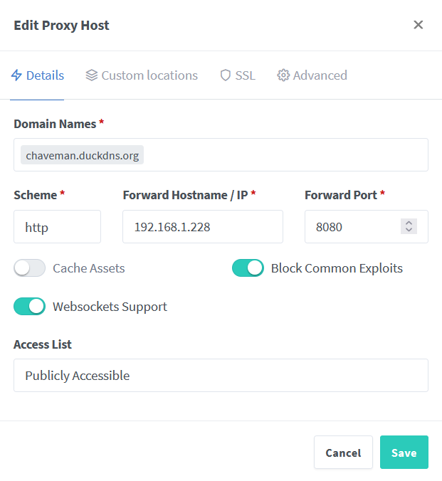
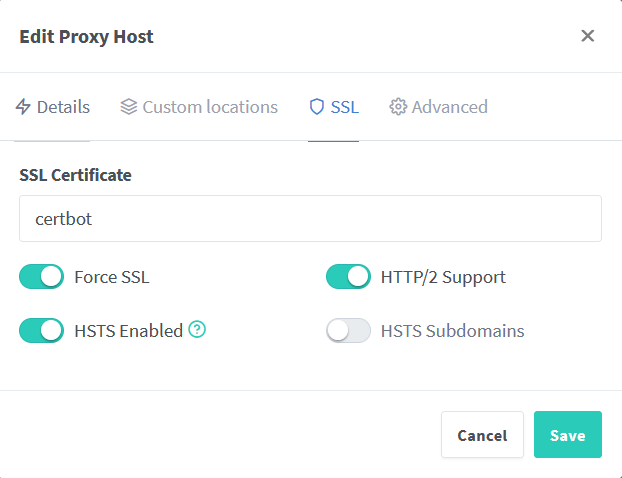
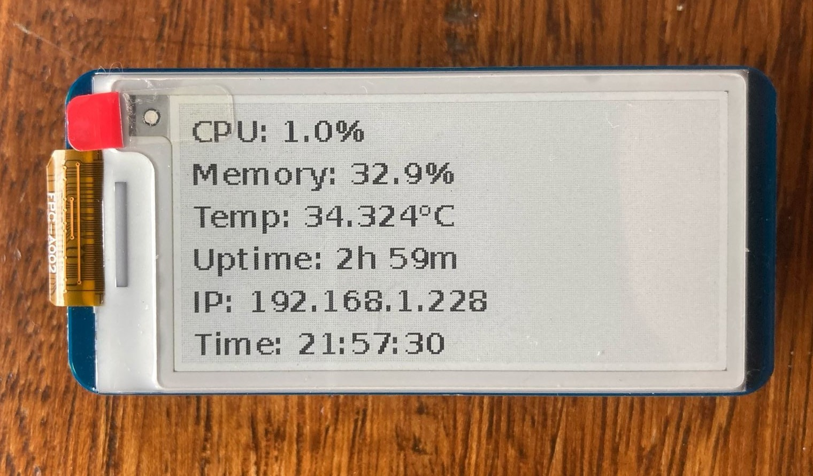

Self-Hosting Vaultwarden on Raspberry Pi Zero 2¶
Why?¶
Many people use simple or reused passwords for online services because they are easier to remember. While I used to do the same, I realized that storing passwords in web browsers is neither secure nor advisable.
To improve my security, I decided to set up a self-hosted password manager using Vaultwarden.
Vaultwarden is a lightweight, self-hosted alternative to Bitwarden. It provides the same functionality while being optimized for low-resource devices like the Raspberry Pi Zero 2 W. It also offers features like Multi-Factor Authentication (MFA), backups, SSL encryption, and remote access, ensuring better security while giving me full control over my credentials.
To achieve this, I used the following hardware:
- Raspberry Pi Zero 2 W, compact and low-power makes it ideal for self-hosted applications.
- Waveshare 2.13 inch e-paper HAT v4
- MicroSD card with 32Gb
- Card reader
- Windows PC
Flash Raspberry Pi OS Lite (64-bit)¶
The first step was to flash Raspberry Pi OS Lite (64-bit) onto the microSD card. I used the Raspberry Pi Imager tool to complete this process.
- Insert the microSD card into the card reader.
- Open Raspberry Pi Imager and Choose OS > Raspberry Pi OS (Other) > Raspberry Pi OS Lite (64-bit).
- Choose the microSD card as the storage device.
- Click Next, then Edit Settings to configure: Enable Set hostname, set up a username and password, Configure Wireless LAN and Enable SSH to allow remote access.
Enabling SSH allows remote access and control over the Raspberry Pi from another device. Since the Raspberry Pi Zero 2 W often runs headless (without a monitor or keyboard), SSH provides a convenient way to configure and manage the system over the network.
- Save and click Yes to use the settings, then wait to write.
Connect Over SSH¶
Since SSH was enabled at the time of writing the OS, I can now connect to the Raspberry Pi over SSH using PuTTY:
- Insert the microSD card into the Raspberry Pi and power it on.
- Open PuTTY on my Windows PC.
- Enter the Raspberry Pi's IP address (found via nmap) in the Host Name (or IP address) field.
- Ensure the Port is set to
22and Connection type is SSH. - Click Open to initiate the connection.
- When prompted, enter the username and password set during configuration.
On the terminal¶
To make sure everything runs smoothly, I started by updating and upgrading the software packages:
sudo apt update && sudo apt full-upgrade -y
Install Docker and Portainer¶
- Install Docker:
curl -sSL https://get.docker.com | sh - Grant Docker permissions to my user (joaof):
sudo usermod -aG docker joaof - Rebooted the system for changes to take effect.:
sudo reboot - Although Docker containers can be managed via the command line, Portainer provides a user-friendly GUI interface for deploying and managing our Docker containers on Raspberry Pi. To pull the latest version of Portainer from Docker Hub:
sudo docker pull portainer/portainer-ce:latest - Creating and running a Portainer container. This command exposes the Portainer web interface on port 9000 and ensures Portainer is always restarted if the system reboots.
sudo docker run -d -p 9000:9000 --restart=always --name=portainer -v /var/run/docker.sock:/var/run/docker.sock -v portainer_data:/data portainer/portainer-ce:latest - With the container running, opened then web browser and accessed the Portainer UI with:
http://192.168.1.228:9000.
Install and Set Up Vaultwarden¶
After creating a Portainer account, I'll deploy and set up a self-hosted Vaultwarden server on the Pi.
- Click on Volume > Add Volume
- Created a volume named VaultwardenServer
- Containers > Add Container and did the following:
- Name: Vaultwarden
- Image: vaultwarden/server:1.32.0 (latest was not working)
- Map an additional port, forwarding 8080 on the host to 80 in the container.
- Volumes > Map additional volume with
/datain the container field and theVaultwardenServervolume created before - Under Restart Policy selected
Always - Finally, click Deploy the container and after a few minutes, the Vaultwarden server is displayed as healthy in the Portainer UI
- I can now visit
http://192.168.1.228:8080Which opens the Vaultwarden web UI.
Set Up the reverse proxy¶
To access and use Vaultwarden, I need to set up a reverse proxy. For this I'll be using Nginx Proxy Manager.
- Ran the following command to pull the latest nginx image and start the container:
sudo docker run -d \ --name=nginx-proxy-manager \ -p 81:81 \ -p 80:80 \ -p 443:443 \ -v /srv/dev-disk-by-label-Backup/Docker/nginx-proxy-manager/data:/data \ -v /srv/dev-disk-by-label-Backup/Docker/nginx-proxy-manager/letsencrypt:/etc/letsencrypt \ --restart unless-stopped \ jc21/nginx-proxy-manager:latest -
To check if the container starts successfully, I opened Portainer and verified that the
nginx-proxy-managercontainer was running. Another way would be to run:docker ps -a.If the container wasn’t running, check the logs troubleshooting with:
docker logs nginx-proxy-manager. -
With the container up I can access the Nginx Proxy Manager web UI at
http://192.168.1.228:81.
Securing Vaultwarden with HTTPS Using Let’s Encrypt & DuckDNS¶
Now that the reverse proxy is set up, I need to secure access to Vaultwarden with HTTPS. I'll use DuckDNS for dynamic DNS, and Let’s Encrypt to generate a free SSL certificate.
This will allow me to access Vaultwarden securely from anywhere without relying on a static IP or a paid domain.
Set Up DuckDNS¶
- Visited DuckDNS and created an account.
- Added a new subdomain chaveman.duckdns.org and linked it to my IPv4 address.
- Copied my DuckDNS Token from the page (I'll need it later).
Generate an SSL Certificate Using Let's Encrypt¶
- Used Certbot with the DNS-01 challenge to obtain an SSL certificate
for my DuckDNS domain:
Ran the following command to request a certificate using the DNS-01 challenge:
sudo apt update && sudo apt install certbot -y
sudo certbot certonly --manual --preferred-challenges dns -d chaveman.duckdns.org
https://www.duckdns.org/update?domains=chaveman&token=MY_TOKEN&txt=TXTVALUE&verbose=true
i got an OK and this means DuckDNS set my TXT record.
3. To make sure that the TXT Record was Published waited a couple of minutes for
DNS to propagate and using Google Admin Toolbox (Dig) I could see my
TXT Value value under the ANSWER section so we're good to go.
4. Pressed Enter and Certbot created two cert files fullchain.pem and
privkey.pem in /etc/letsencrypt/live/Vaultwarden.duckdns.org/.
5. sudo certbot certificates to check the certificates expirity date,
was 90 days so to make it automaticaly renew: sudo crontab -e
to open the crontab file with NANO and added the cron job 0 0 * * * certbot renew --quiet which will run Certbot command to renew the SSL certificates automatically, ensuring the website's encryption remains valid without manual intervention.
Nginx Proxy Manager¶
Since the Web UI’s file explorer only shows local files, I had to copy the cert files from the Raspberry Pi to my local machine so they could be uploaded.
- Copy the cert files to my local machine using
scp(secure copy):scp joaof@192.168.1.228:/etc/letsencrypt/live/Vaultwarden.duckdns.org/fullchain.pem /home/joaof/Documents/Certificates scp joaof@192.168.1.228:/etc/letsencrypt/live/Vaultwarden.duckdns.org/privkey.pem /home/joaof/Documents/Certificates - Returned to the Nginx Proxy Manager Web UI > SSL Certificates >
Add SSL Certificate > Custom and selected the cert files:

- Add Proxy Host:

- Under SSL:

At this point I should've been able to connect to https://chaveman.duckdns.org but i was getting an SSL error on the browser and using Port Checker I can see that my ISP is blocking inbound traffic for port 443.
- Access my router configurations to port forward the 443 port to the rpi.
- Finally connect to https://chaveman.duckdns.org and access Vaultwarden.
Enhancing Vaultwarden with an E-Paper Display¶
- Enabled SPI on my Raspberry Pi by running:
sudo raspi-config - Navigated to Interfacing Options > SPI > Enable
- After enabling SPI, I rebooted the system:
sudo reboot - Installing the necessary Python libraries:
sudo apt-get update sudo apt-get install python3-pip python3-pil python3-numpy sudo apt-get install python3-spidev python3-rpi.gpio sudo apt-get install python3-psutil - Cloned the waveshareteam repo and moved into the correct directory:
git clone https://github.com/waveshare/e-Paper.git cd ~/e-Paper/RaspberryPi_JetsonNano/python - For the Waveshare 2.13-inch v4 display, I used the
epd2in13_V4module from../lib/waveshare_epdand tested it using../examples/epd2in13_V4_test.py. From there, I built system_monitor_v1 to display system info like temperature, uptime, and IP address.

outra possibilidade seria obter um dominio e cloudflare tunnel
🚧 Work in Progress 🚧